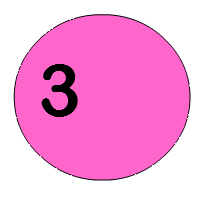

Welcome to My Lab Journal
This journal captures my journey through web animations. Dive into experiments, code snippets, and interactive demos.

This journal captures my journey through web animations. Dive into experiments, code snippets, and interactive demos.
Date: 2025-05-10
Explore the dynamic behavior of elements with CSS animations and JavaScript sequencing.
1. Defined keyframes in CSS for smooth motion.
2. Applied transitions with JavaScript event triggers.
<div class="floating">Hello</div>
.floating {
animation: float 3s infinite;
}
Found that easing functions greatly impact smoothness. Future experiments will include real-time controls using Visual Studio Code setup.
Date: 2025-05-11
Implement parallax scrolling and on-scroll content reveal for an engaging user experience.
1. Utilized Intersection Observer for scroll detection.
2. Applied CSS transitions to fade in elements.
const options = {
threshold: 0.5
};
const observer = new IntersectionObserver(callback, options);
Scroll-triggered effects add depth and engagement. Future work will also explore libraries like GSAP for more fluid animations.
View detailed experiment documentation
Date: 2025-05-12
Implement advanced scroll effects including parallax scrolling and on-scroll content reveal for an engaging user experience.
1. Utilized Intersection Observer for scroll detection.
2. Applied CSS transitions to fade in elements.
const options = {
threshold: 0.5
};
const observer = new IntersectionObserver(callback, options);
Scroll-triggered effects add depth and engagement. Future work will also explore libraries like GSAP for more fluid animations.
View detailed experiment documentation
Date: 2025-05-13
Explore the use of SVGs for scalable and interactive animations, enhancing visual storytelling.
1. Created SVG graphics with embedded animations.
2. Used JavaScript to control SVG properties dynamically.
<svg width="100" height="100">
<circle cx="50" cy="50" r="40" fill="red" />
</svg>
SVG animations provide high-quality visuals that scale well. Future experiments will include more complex SVG interactions and animations.
Date: 2025-05-14
Utilize the HTML5 canvas for complex animations and real-time graphics rendering.
1. Set up a canvas element and context.
2. Implemented animation loops using requestAnimationFrame.
const canvas = document.getElementById('myCanvas');
const ctx = canvas.getContext('2d');
ctx.fillStyle = 'blue';
ctx.fillRect(0, 0, canvas.width, canvas.height);
Canvas animations allow for intricate designs and real-time interactions. Future work will explore integrating WebGL for 3D effects.
Date: 2025-05-15
Explore advanced animation libraries like GSAP and Anime.js for complex animations and timeline control.
1. Integrated GSAP library for timeline animations.
2. Created complex sequences with callbacks and easing functions.
gsap.to(".box", { duration: 2, x: 100, rotation: 360, ease: "power2.inOut" });
Advanced libraries streamline complex animations, making them more manageable. Future experiments will focus on combining multiple libraries for enhanced effects.
View detailed experiment documentation
Date: 2025-05-16
Implement interactive animations that respond to user input, enhancing engagement and usability.
1. Used event listeners to trigger animations on user actions.
2. Created dynamic effects based on mouse movements and clicks.
document.addEventListener('mousemove', (e) => {
const x = e.clientX;
const y = e.clientY;
const circle = document.querySelector('.circle');
circle.style.transform = `translate(${x}px, ${y}px)`;
});
Interactive animations significantly enhance user experience. Future work will include more complex interactions and real-time feedback mechanisms.
Detailed breakdowns of advanced animation methods including CSS keyframes, JavaScript‑driven motion, and comparisons between libraries such as GSAP and Anime.js.
Personal observations on animation principles and industry trends, along with future improvement ideas.
